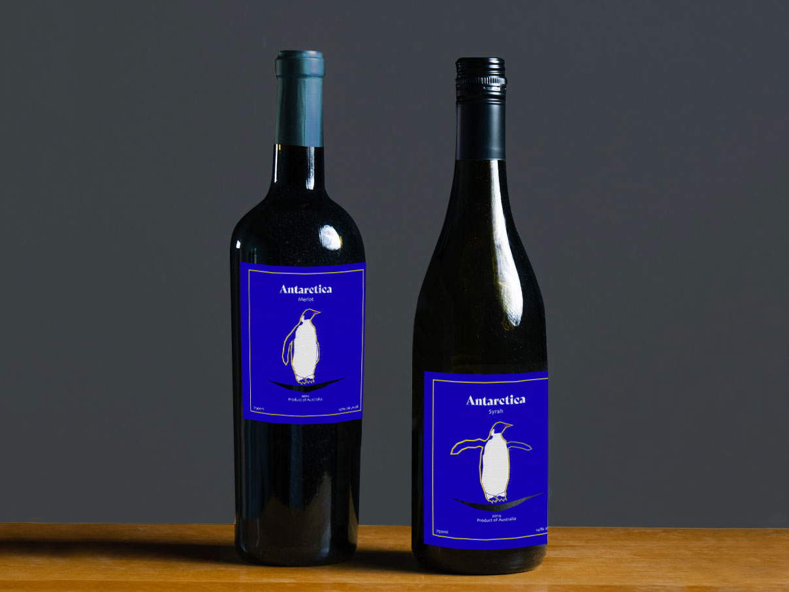
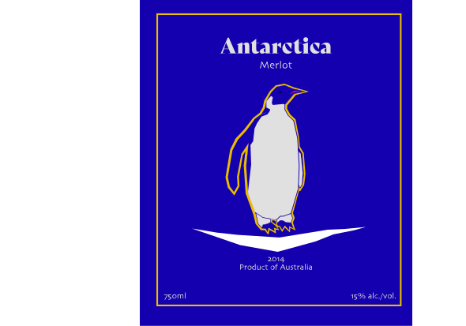
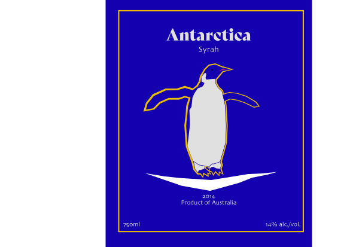

Wine Label Design


Overview
Project Type:
Personal work
Goal:
Antarctica winery is going to market two red wines in
2022. Two wines will sell by combo. The goal is to
design two labels that reveal modern and decorum.
The colours collection needs to be no more than three
colours.
Role:
Graphic Designer
Software used:
Illustrator, Photoshop
Challenge:
Because the winery name is Antarctica, I decide to use
penguin to be the main illustration on the label. I spent
much time creating a penguin to fit modern and decorum.
Solution:
Use the geometric figures to simplify the penguin to
ensure a modern style. Also, use the colour combination
to make sure the design looks decorous.